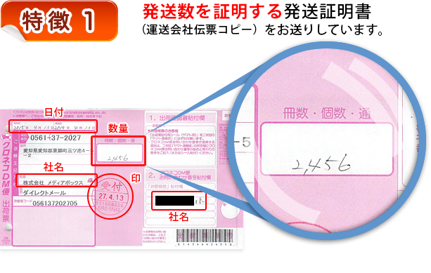
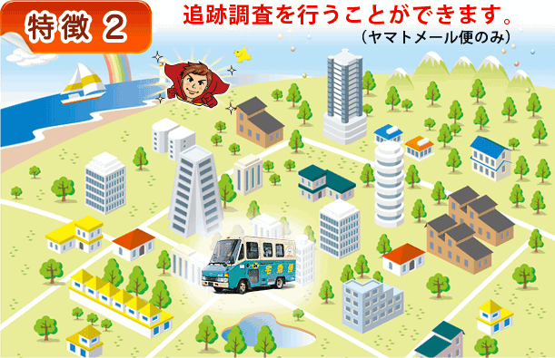
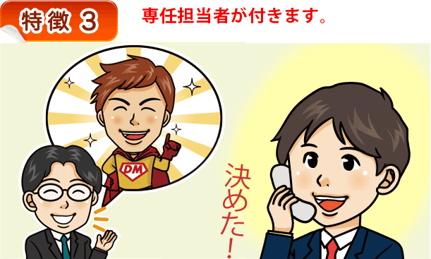

初めての方へ
メディアボックスでは重さ1kg以下・厚さ2cmの発送物を300通より業界最低水準価格で
発送します。
メディアボックスは売上高を求めず、お客様からリピートして頂ける会社を目指しています。
特徴
初めての取引で顔も見ずにダイレクトメールの発送代行を依頼して心配になると思います。
「もしかしたら全部発送できていないのではないか？」
「A社から連絡がないが本当に届いているのか？」
あなたが心配になるのはよくわかります。
そこで当社では以下の3つの対応で安心していただいています。

クロネコＤＭ便（旧メール便）・佐川郵メール便で送る場合は発送伝票のコピーをお渡しします。
「日付」「数量」「御社名」を確認してください。

もし届いているか心配な宛先がある場合はお問い合わせください。
当社にてクロネコＤＭ便（旧メール便）の宛名ラベルを作成した場合のみに可能です。
（佐川郵メール便は不可）

問い合わせをしたときに話がすぐに伝わるように専任の担当者がつきます。
メディアボックスを使ってメリットのある会社
１ 発送数が３万通以下
２ 安価な発送を希望
３ 電話でのスムーズな連絡が必要
４ 安全・実績が大切（一部上場会社60社との取引実績）
５ 理屈ではなく現場のテスト結果が必要な方
メディアボックスにできないこと
１ 当日依頼して翌日発送
２ 料金の後払い
３ 同業者の下請け作業
まず初めに知っていただきたいこと
安くできるわけ
他社との違い
DM発送代行業者の選び方
90％の人が知らずに損をしているDMの真実
利用方法
DM発送料金
2円印刷（黒一色印刷）料金
カラー印刷料金
A4ハガキ（印刷＋発送）料金